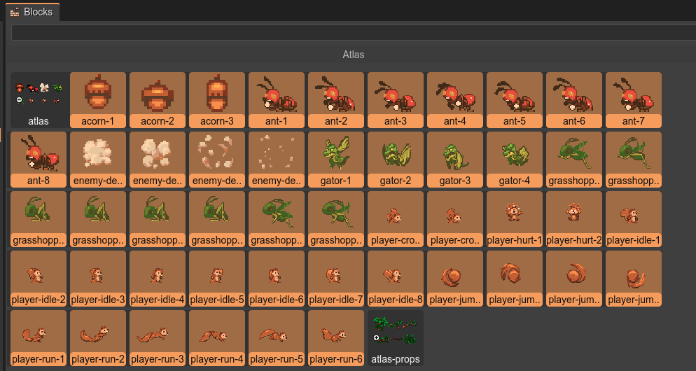
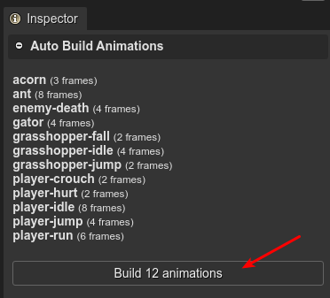
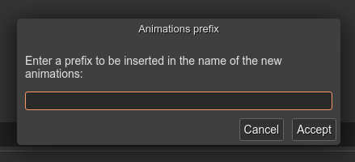
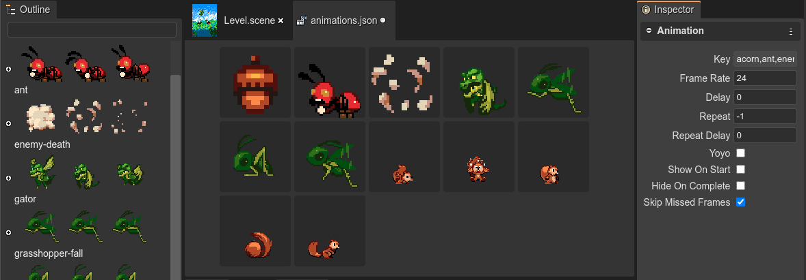

Automatic creation of the animations
The most powerful feature of the Animations Editor is the automatic creation of the animations.
It is a process that allows us to create multiple animations by selecting all the frames required by all the animations.
This is how it works:
Select a couple of frames in the Blocks view. If you select a texture map or spritesheet, all their frames will be considered too.
The Auto Build Animations section in the Inspector view shows a list of animations that can be created. Press the Build animations button.

Alternatively, you can drag the frames and drop them into the editor.
It shows a dialog asking for a prefix to be added to the generated animations. It is optional. This could be needed for disambiguation. For example, if the animations to be added has the names run, walk, jump, you can add a prefix like player- or enemy-, so the animations will have the names player-run, player-walk, player-jump.
All the animations will be created with the same parameters (frameRate, repeat, etc…) but you can change them in the Inspector view.

The process of grouping the frames by a common prefix is very simple. To get the prefix of a frame, it removes all the non-alpha characters at the end:
Input
acorn-1
acorn-2
acorn-3
ant-1
ant-2
ant-3
ant-4
ant-5
ant-6
Output
acornanimationacorn-1frameacorn-2frameacorn-3frame
antanimationant-2frameant-3frameant-4frameant-5frameant-6frame
Some texture packing tools include the extension of the images in the name of the frames, for example, ant-1.png. It breaks the algorithm of extracting the prefix of a frame. For that reason, it first does the removal of all the image extensions of the frame names, if it is the case. Then ant-1.png is converted to ant-1, and the prefix will be ant.